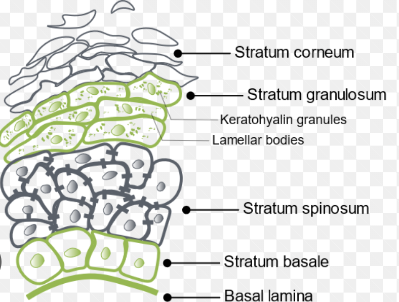
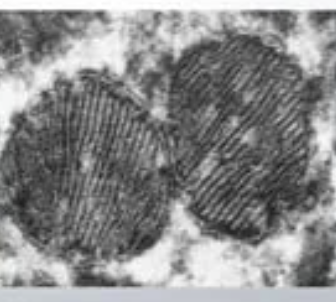

They swing by every now and then, always ahead of a big day.
Ever wondered why these notorious patches appear?
The answer lies in our skin's stratum corneum(epidermis's uppermost layer).
|
|
We all have suffered from those white, flaky patches that never seem to go away.
They swing by every now and then, always ahead of a big day. Ever wondered why these notorious patches appear? The answer lies in our skin's stratum corneum(epidermis's uppermost layer). |
Let us begin by understanding the layers of our skin; our body's first line of defence.
|
 |
Odland bodies, NMF and naturally-occurring lipids are the perfect ingredients to smooth and supple skin.
The keratinocytes(keratin) secrete NMF or Natural Moisturising Factor in the granum layer. These chemicals maintain skin elasitcity, activate hydrolytic enzymes and act as a barrier for our skin. Hydrolytic enzymes then help destroy dead cells and desquamate them or shred them. The NMF is made up of water and humectants, substances that absorb atmospheric water. Thereby, in less humid conditions, lack of water makes the skin dry.
| Substance | Function |
|---|---|
| Urocanic acid (UCA) |
Acts as natural sunscreen against UVR. Provides protons ot maintain sin's pH. Maintains keratinocyte apoptosis. |
| Lactate |
Dissolves bonds between dead skin cells and helps in exfoliation or desquamation. Reduces transepidermal water loss by increasing ceramide production. Helps increase cell turnover and cell renewal. |
| Urea |
Regulates keratinocyte proliferation. Acts as a humectant as its hydroxyl groups forms hydrogen bonds with water. Breaks outer layer of skin to promote new cell production. |
| Pyrrolidone carboxylic acid |
Forms intercellular lipids that holds and protect's the skin barrier's cells. Hydrates the skin and helps maintain its plump and youthful look. |
A protein called Filaggrin is another important component of NMF as it binds corneocytes(keratinocytes in the stratum corneum).
Odland bodies are lamellar strucutres that are ovoid shaped and 200-300nm long.
They are found in the spinous and granulosum layer.
They separate from the Golgi body, move in the cytosol then latch onto the plasma membrane, releasing their contents into the intercellular space.
They help maintain anti-microbial immunity, skin desquamation and increase epidermal permeability.
|
 |
Lipids like cholestrol, ceramides and free fatty acids help maintain water absorbancy, skin elasitcity and prevents flaky skin.
| Dry skin is when our body lacks the ability to make these proteins and lipids due to genetic defects or makes less of them. This is where skin care comes in, which contain these as supplements to replenish our skin barrier. |
FromNature.ca, Paulina-. “What Is NMF (Natural Moisturizing Factor) And Why Is Essential For Your Skin.”
Medium, 23 Mar. 2017,
https://medium.com/@fromnature.ca/what-is-nmf-natural-moisturizing-factor-and-why-is-essential-for-your-skin-d55a741b3790.
C Sreeja, SSS Shirin, B Madhumitha, Jayaraj M, Francis S, Muthukumar S. Odland bodies: A Review. J Adv Med Dent Scie Res 2020;8(11):12-15.
https://jamdsr.com/uploadfiles/3odlandbodiesvol8issue11pp12-15.20201101040408.pdf